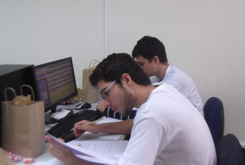

[ED241] Submissões
Neste problema deverá submeter uma classe ED241 contendo um programa completo para resolver o problema (ou seja, com o método main).
Pode assumir que no Mooshak terá acesso a todas as classes base dadas nas aulas, incluindo as de árvores binárias BTree, BSTree e BSTMap (não precisa de as incluir na submissão).
Pode fazer download de todas as classes num arquivo zip ou ver as classes uma a uma.
[PROBLEMAS PARA DOWNLOAD]
Para precaver uma possível intermitência na ligação de internet, podem e devem fazer download de todos os problemas em:
https://mooshak.dcc.fc.up.pt/~edados/_teste_p2_/NUM_MECANOGRAFICO.zip (onde NUM_MECANOGRAFICO deve ser substituido pelo vosso número mecanográfico)
Suponha que tem disponível uma lista de submissões de programas. Uma submissão é caracterizada por um triplo (Aluno,Problema,Resultado), onde um Aluno é o nome do aluno, Problema é o nome de um problema de programação que o aluno estava a tentar resolver e resultado é o resultado da submissão (se foi aceite ou não).
A sua tarefa é fazer algumas estatísticas sobre estas submissões. Nomeadamente, deve calcular:
- [flag 1] a quantidade de alunos diferentes que tiveram pelo menos uma submissão (25% da cotação deste problema)
- [flag 2] qual o problema com mais submissões (sendo garantido que existe um único problema que foi submetido mais vezes que os outros) (25% da cotação deste problema)
- [flag 3] quais os problemas mais acessíveis, nomeadamente os que tenham um rácio de submissões aceites maior ou igual a 50%, imprimidos por ordem alfabética. O rácio é igual ao total de submissões a dividir pelo números de submissões com resultado "Accepted" (25% da cotação deste problema)
- [flag 4] quais os alunos que resolveram todos os problemas, ou seja que obtiveram "Accepted" pelo menos uma vez em todos os problemas (sendo que é garantido que todos os problemas têm pelo menos uma submissão); os alunos devem vir por ordem alfabética (25% da cotação deste problema)
Imagine por exemplo que tinha a seguinte lista de 10 submissões:
| Aluno |
Problema |
Resultado |
| PedroRibeiro |
ED213 |
Accepted |
| ManuelPinto |
ED213 |
Accepted |
| PedroRibeiro |
ED212 |
Accepted |
| ManuelPinto |
ED213 |
WrongAnswer |
| ClaudioCunha |
ED212 |
RuntimeError |
| ClaudioCunha |
ED211 |
CompileError |
| PedroRibeiro |
ED211 |
Accepted |
| PedroRibeiro |
ED212 |
Accepted |
| ManuelPinto |
ED213 |
CompileError |
| AntonioFerreira |
ED213 |
TimeLimitExceeded |
Para esta lista de avaliações as estatísticas eram as seguintes:
- [flag 1] o número de alunos diferentes é 4 (PedroRibeiro, ManuelPinto, ClaudioCunha e AntonioFerreira).
- [flag 2] o problema com mais submissões é o ED213 (5 submissões)
- [flag 3] Os problemas com rácio de aceites superior a 50% são, por ordem alfabetica, o ED211 e o ED212. Os rácios são os seguintes
- ED211: rácio = 1/2 = 0.5
- ED212: rácio = 2/3 = 0.6(6)
- ED213: rácio = 2/5 = 0.4
- [flag 4] existem 3 problemas (ED211, ED212 e ED213) e o único aluno que os resolveu a todos é o PedroRibeiro.
Input
A primeira linha de input contém um inteiro F, a flag (1, 2, 3 ou 4) indicando qual estatística deve calcular, de acordo com o atrás descrito.
A segunda linha contém um inteiro N, a quantidade de submissões (1≤N≤1000). Seguem-se N linhas descrevendo as submissões em si, cada uma no formato NOME PROBLEMA RESULTADO, onde NOME, PROBLEMA e RESULTADO são palavras sem espaços.
Output
O output do seu programa depende da flag dada:
- Se a flag for 1, o output deve ser uma linha contendo um único inteiro, a quantidade de alunos diferentes que tiveram pelo menos uma submissão.
- Se a flag for 2, o output deve ser uma linha contendo uma palavra e um inteiro (separados por um espaço): o nome do problema que foi submetido mais vezes e o número de vezes que foi submetido (é garantido que existe um único problema que foi submetido mais vezes que todos os outros).
- Se a flag for 3, o output deve conter os nomes dos problemas com rácio de aceites ≥50%, um por linha, por ordem alfabética.
- Se a flag for 4, o output deve conter os nomes dos alunos que resolveram todos os problemas, um por linha, por ordem alfabética (um mesmo aluno pode ter várias submissões aceites no mesmo problema, pelo que não chega contar o número de submissões aceites).
Note que para estabelecer a ordem alfabética pode usar a ordem natural das Strings, não tendo de se preocupar com o facto das letras serem maiúsculas ou minúsculas.
Dicas
É livre para fazer fazer como quiser, mas é sugerido fazer da seguinte maneira:
- [flag 1] pode usar uma árvore binária de pesquisa (BSTree). Se inserir todos os nomes na árvore (de que tipo devem ser os nós da árvore?), saber quantos existem é saber quantos nós tem a árvore... (também pode usar um dicionário para o mesmo efeito).
- [flag 2] use um TAD dicionário (BSTMap) para guardar o número de submissões de cada problema (de que tipos devem ser as chaves e os valores deste dicionário?). De cada vez que lê uma submissão, é só ir ao dicionário e incrementar a frequência do respetivo problema. No final basta percorrer todos os problemas encontrar o mais frequente (ou pode optar por, cada vez que incrementa, verificar se passou a ter um novo máximo).
- [flag 3] use um outro TAD dicionário (BSTMap) para guardar o número de submissões aceites de cada problema (aquelas cujo resultado é igual a "Accepted": como comparar Strings?). No final percorra todos os problemas e imprima-os no caso do rácio ser >= 0.5, dividindo o valor correspondendo ao total de submissões (que está guardada no mapa da flag anterior) pela quantidade de accepted's. Em relação à ordem alfabética, como o dicionário está numa árvore de pesquisa, o método que as devolve percorrer a árvore inorder, logo estas já são obtidas precisamente por ordem alfabética!
- [flag 4] precisa de uma maneira de guardar os problemas que cada aluno fez. Uma hipótese é usar um mapa onde as chaves são os alunos e os valores são... conjuntos (representados por árvores binárias). Assim, cada vez que vir uma submissão aceite, é só ir ao aluno e inserir o problema no conjunto correspondente (sendo que os conjuntos já tratam da parte de não contar repetidos). No final basta percorrer todos os alunos e verificar se o conjunto de problemas que ele fez tem tamanho igual à quantidade de problemas disponíveis (que pode saber vendo o mapa... das flags anteriores!)
Exemplos de Input/Output
Os quatro exemplos de input correspondem precisamente às quatro flags para o caso dado.
| Input 1 |
Output 1 |
1
10
PedroRibeiro ED213 Accepted
ManuelPinto ED213 Accepted
PedroRibeiro ED212 Accepted
ManuelPinto ED213 WrongAnswer
ClaudioCunha ED212 RuntimeError
ClaudioCunha ED211 CompileError
PedroRibeiro ED211 Accepted
PedroRibeiro ED212 Accepted
ManuelPinto ED213 CompileError
AntonioFerreira ED213 TimeLimitExceeded
|
4 |
| Input 2 |
Output 2 |
2
10
PedroRibeiro ED213 Accepted
ManuelPinto ED213 Accepted
PedroRibeiro ED212 Accepted
ManuelPinto ED213 WrongAnswer
ClaudioCunha ED212 RuntimeError
ClaudioCunha ED211 CompileError
PedroRibeiro ED211 Accepted
PedroRibeiro ED212 Accepted
ManuelPinto ED213 CompileError
AntonioFerreira ED213 TimeLimitExceeded
|
ED213 5 |
| Input 3 |
Output 3 |
3
10
PedroRibeiro ED213 Accepted
ManuelPinto ED213 Accepted
PedroRibeiro ED212 Accepted
ManuelPinto ED213 WrongAnswer
ClaudioCunha ED212 RuntimeError
ClaudioCunha ED211 CompileError
PedroRibeiro ED211 Accepted
PedroRibeiro ED212 Accepted
ManuelPinto ED213 CompileError
AntonioFerreira ED213 TimeLimitExceeded
|
ED211
ED212 |
| Input 1 |
Output 1 |
4
10
PedroRibeiro ED213 Accepted
ManuelPinto ED213 Accepted
PedroRibeiro ED212 Accepted
ManuelPinto ED213 WrongAnswer
ClaudioCunha ED212 RuntimeError
ClaudioCunha ED211 CompileError
PedroRibeiro ED211 Accepted
PedroRibeiro ED212 Accepted
ManuelPinto ED213 CompileError
AntonioFerreira ED213 TimeLimitExceeded
|
PedroRibeiro |
Teste Prático de Estruturas de Dados (CC1007)
8 de Junho de 2020